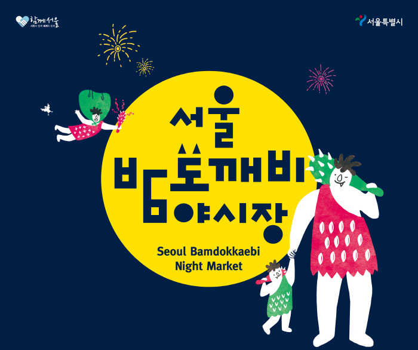

◀메인화면
당신이 선택한 서울. 이런데는 어떠신가요?
당신의 배를 채울 먹을거리!

서울도깨비 야시장은 서울특별시에서 주최하는 행사로 다양한 푸드트럭과 다양한 핸드메이드 제품을 볼수있어요!
특히 푸드트럭은 인기가 좋으니! 맛있는 요리가 가득하고 아기자기한 핸드메이드 제품과 다양한 공영을 볼려면
서울도깨비 야시장으로!
도깨비야시장의 자세한 정보!>
남대문시장은 2017년 7월부터 매주 토요일마다 야시장을 열어요!
그래서 남대문시장의 여러가지 가구나 의류등을 보면서 먹을거 하나씩 먹어주면 배는 이미 빵빵 눈은 이미 호강!
남대문시장의 자세한 정보!
배도 채웠겠다 슬슬 보면서 즐기자 볼거리 와 즐길거리!
서울에 왔으면 롯데월드를 한번도 안가볼수는 없겠죠?
다양한 놀이기구 신나는 퍼레이드!동심을 찾는 아쿠아리움까지!
롯데월드로 다함께 가봐요!
에버랜드에 자세한 정보!